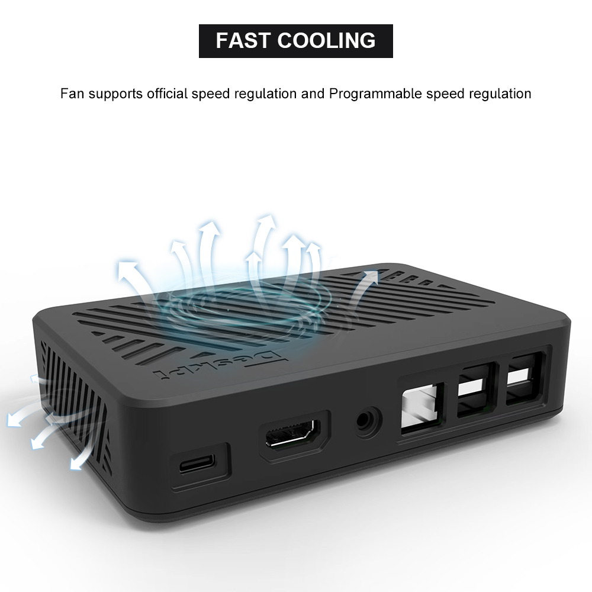

DeskPi Lite for Raspberry Pi 3B/3B+

Description
Introducing the DeskPi Lite for Raspberry Pi 3B/3B+ - a sleek and efficient ABS case designed specifically for Raspberry Pi 3B/3B+ users. With a built-in mainboard, this case helps consolidate the MicroUSB, HDMI port, and 3.5mm audio jack to the back, making cable management a breeze.
The package includes a PWM adjustable speed fan and an aluminum heatsink for optimal thermal performance.
The DeskPi Lite combines effective heat dissipation with a stylish design, making it the perfect addition to your Raspberry Pi setup.
Purchase

Features
- Easy-to-assemble ABS enclosure
- PWM signal adjustable speed fan for optimal Cooling
- Convenient cable management with rear-facing MicroUSB, HDMI port, and 3.5mm audio jack
- LED indicator shield for enhanced visual appeal
- Mounting hole support for versatile installation options
- Elegant desktop-set style design
Gallery
-
Fast Cooling 
-
Port Definitions

-
Anti-slipper rubber feet
How to assemble
- Step 1

- Step 2

Package includes
- 1 x DeskPi Lite for Raspberry Pi 3B/3B+
- 1 x PWM adjustable speed fan with aluminum heatsink
- 4 x Thermal pad for improved heat transfer
- 2 x M.2 screws for securing the aluminum heatsink
- 1 x Transparent plastic shield for the LED indicator
How to cut off the power safely?
After safe shutdown your Linux system by typing this command:
andLong press the power button until the LED color on power button from Blue turn to Red.
How to enable fan temperature control?
NOTE: Raspberry Pi OS (Latest) will support this function.
- Open a terminal and typing following command:
Navigate to Performance Options -> P4 Fan -> Yes -> 14 -> 60 -> yes -> finish -> reboot Raspberry Pi.
The fan is support PWM signal control via GPIO14 which is physical pin 12(TXD), it will spinning when the CPU temperature is above 60 degree.
and also you can write your code to control the fan via GPIO14, sending PWM signal will trigger the fan spinning.
How to control fan speed by sending PWM signal?
- Create a python file and paste following demo code into it.
#!/usr/bin/python3 import RPi.GPIO as GPIO import time import subprocess GPIO.setmode(GPIO.BCM) GPIO.setup(14, GPIO.OUT) pwm = GPIO.PWM(14,100) print("\nPress Ctrl+C to quit \n") dc = 0 pwm.start(dc) try: while True: temp = subprocess.getoutput("vcgencmd measure_temp|sed 's/[^0-9.]//g'") if round(float(temp)) >= 45: dc = 100 pwm.ChangeDutyCycle(dc) print("CPU Temp:",float(temp)," Fan duty cycle:",dc) time.sleep(180.0) if round(float(temp)) >= 40: dc = 85 pwm.ChangeDutyCycle(dc) print("CPU Temp:",float(temp)," Fan duty cycle:",dc) time.sleep(120.0) else: dc = 70 pwm.ChangeDutyCycle(dc) print("CPU Temp:",float(temp)," Fan duty cycle:",dc) time.sleep(60.00) except KeyboardInterrupt: pwm.stop() GPIO.cleanup() print("Ctrl + C pressed -- Ending program")
Then execute it:
FAQ
- Q: Can I power off it by double clicking the power button?
A: No, It can not send power off signal by adding
dtoverlay=dwc2,dr_mode=hostto enable otg mode on microUSB port on Raspberry Pi 3B/3B+, it can only cut off power by pressing the power button until the LED indicator turns frombluetored, it just cut off the power supply from power source to Raspberry Pi.